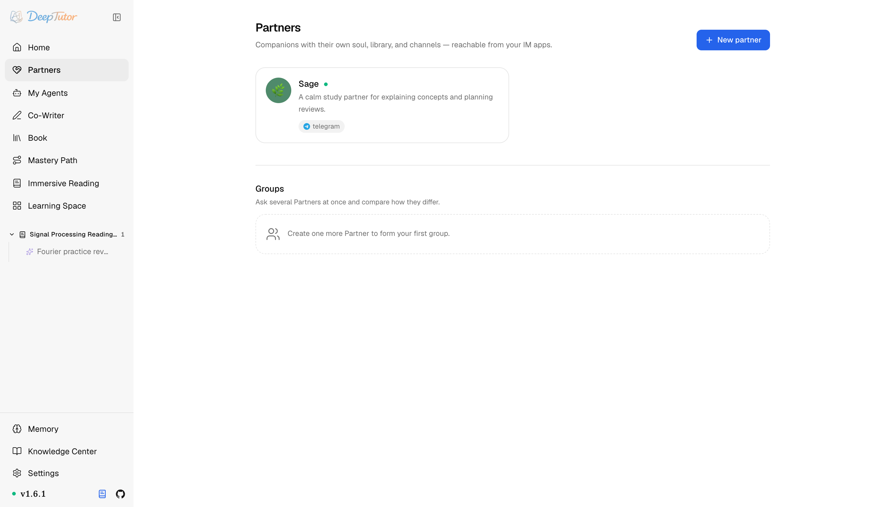
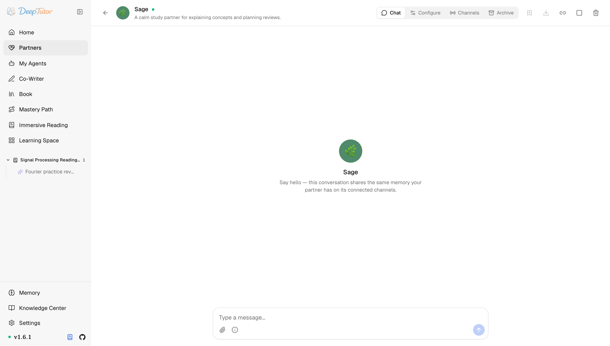
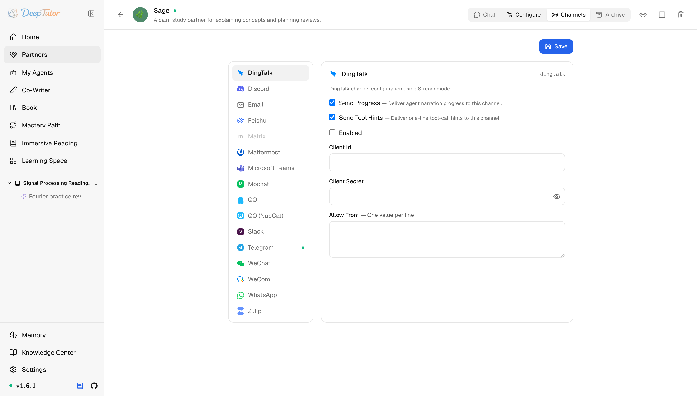
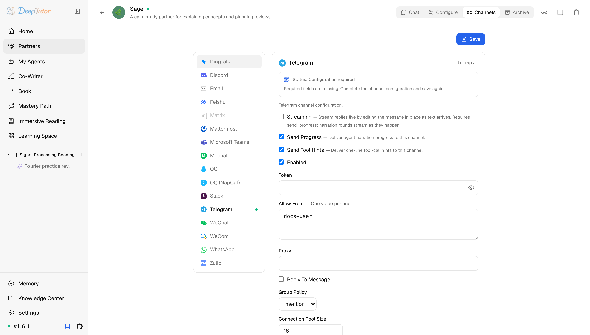

探索 DeepTutor夥伴
給 AI 配個隨身學習夥伴！DeepTutor 5 步建立 Partner，微信 Telegram 都能聊，附完整玩法！｜零度解說
與 DeepTutor 聊天共用同一智慧代理迴圈、可接入 IM 管道的持久學習夥伴——擁有自己的靈魂、資料庫、記憶與管道。
原文連結：https://docs.deeptutor.info/zh-cn/explore/partners/
你有沒有想過，讓 AI 不只是「開啟網頁才在」，而是待在你的微信、Telegram 裡，像老朋友一樣隨叫隨到，還記得你們聊過的每一件事？
最近不少朋友在後台問我：DeepTutor 能不能有一個固定人設、長期記住我的聊天對象？別每次開新會話都從頭自我介紹一遍。
還真能。最近我把 DeepTutor 的夥伴（Partner）功能整個翻了一遍：5 步精靈就能建立一個帶身份、靈魂、資料庫、記憶的學習夥伴，網頁、微信、Telegram、Slack、WhatsApp、企業微信、QQ 這些入口都能接。
但是問題來了。靈魂是什麼？記憶怎麼隔離？管道怎麼配？接下來我們一個一個拆開講。
先搞清楚：夥伴到底是什麼
夥伴（Partner）是持久的學習夥伴，擁有自己的身份、靈魂（soul）、模型策略、資料庫、記憶與管道設定。
它不是另一套機器人引擎：每一條進來的訊息——無論來自網頁還是即時通訊（IM）應用——都走同一個 ChatOrchestrator → AgenticChatPipeline 迴圈，也就是驅動主頁的那一個。
夥伴就是「一段有了人格、還帶了手機號的聊天」。
在哪裡找到它
點選左側欄的 Partners（夥伴）。
頁面會列出你擁有的夥伴和管理員分配給你的夥伴，包括頭像、狀態、描述與已連線管道；下方還會顯示 Partner Groups，並提供 New partner（新增夥伴）按鈕。

心智模型：一個大腦，多扇門
每個夥伴在 data/partners/<id>/workspace/ 下擁有一個合成使用者工作區（synthetic user workspace）。
這個工作區裡裝著夥伴的靈魂、複製過來的知識庫、複製過來的技能、筆記本與記憶。
管道執行環境狀態不放在合成工作區裡，而是放在同級的 data/partners/<id>/channels/<channel>/ 下。
由於工作區佈局與普通聊天一致，所有工具，從 RAG（檢索增強生成）、read_skill 到筆記本、記憶、MCP（模型上下文協定）延遲載入工具，都能直接為夥伴所用，無需單獨實現。
由此帶來幾個實際結論：
一個大腦，多扇門。 不管你是在網頁裡、還是透過微信、Telegram、Slack 和它對話，夥伴的推理都是同一套，管道只是投遞轉接器。
複製的資料庫，而非即時連結。 知識庫、技能、筆記本在分配時被 複製 進夥伴工作區，因此即便你在別處改了上下文，夥伴依舊照常工作。
記憶跟著關係走。 對已認證的非管理員使用者，夥伴會在 users/<user_id>/workspace/memory/ 下讀寫這段關係的私有記憶，同時可以讀取當前互動使用者自己的共享記憶。
會話歷史也按使用者隔離，所以兩個人即使被分配了同一個夥伴，也不會繼承彼此的會話或已學習偏好。管理員會話和未歸屬帳號的管道訊息則使用夥伴頂層記憶作為相容性退回。
一個大腦配多扇門的設計，配好一次處處都能找到它，用起來是真香。
所有權與共享訪問
夥伴已不再是管理員專屬資源。
任何已認證使用者都可以建立夥伴，並自動成為所有者；所有者和管理員可以設定它的靈魂、資料庫、管道、工具、模型與生命週期。
管理員也可以把夥伴分配給其他使用者，讓對方能夠聊天，但看不到也不能修改內部設定。
共享夥伴時，這層分工很重要：身份和知識資產保持一致，每個人的會話與關係記憶仍然私有。
外部 IM 帳號在私聊中執行 /link <code> 後，也可以進入該使用者對應的同一份私有作用域。
5 步建立一個夥伴
點選 New partner，走完精靈：
- Identity（身份）——名字、頭像、描述、預設回覆語言。
- Soul（靈魂）——夥伴的角色與溝通風格，會落成它的
SOUL.md。 - Mind（心智）——模型選擇、啟用的系統工具、MCP 工具、投遞偏好。
- Library（資料庫）——分配知識庫、技能、筆記本（會複製進夥伴工作區）。
- Review（確認）——開始前確認工作區與管道設定。
這裡選的一切，之後都能在夥伴詳情頁裡繼續修改，不用擔心一步選錯。
和它聊起來
開啟一個夥伴會進入它的 Chat 標籤頁：一個完整的對話檢視，表現得就像主工作台，只是換成了那個夥伴。
頂部的標籤依次是 Chat、Configure、Channels、Archive。

因為夥伴有記憶，它會隨時間積累對你的認識。
問它「你瞭解我什麼？」，你會看到一個 Recalling memory 步驟：夥伴先讀取自己的記憶層，再用它的靈魂作答。
Configure 標籤頁涵蓋身份、靈魂、心智與資料庫。
Archive 是軟封存：Resume 會重開同一會話標識（session key），Branch 會複製完整歷史並封存來源，只有 Delete 才會永久刪除。
Partner Groups：拉個群一起聊
Partner Group（夥伴群組）會把兩個或更多夥伴帶進同一段共享對話。
選好成員、討論模式和共享記憶模式後，可以讓所有成員回答，也可以只 @ 指定成員。
每個夥伴的回覆佔據獨立席位（seat），因此即使圍繞同一段公開討論推理，各自的觀點仍清楚分開。
群組擁有自己的會話與持久歷史。某個席位失敗時，可以只重試該成員，而不用讓已經完成的回答重跑。
夥伴群組顯示在夥伴頁面上各個夥伴卡片的下方；至少要有兩個可訪問的夥伴才能組建群組。
管道：把夥伴接進你的聊天軟體
管道是圍繞同一個夥伴大腦的投遞轉接器。
Channels 標籤頁在左側列出所有支援的應用；選中一個，在右側設定憑據與行為，然後 Save 並啟用。
頁面會輪詢正在執行的夥伴，顯示連線成功、連線中、listener 正在執行、等待掃描 QR Code、缺少設定、不可用、連線失敗或尚未連線。

大多數管道卡片共用幾個開關：
| 欄位 | 含義 |
|---|---|
| Enabled | 為該夥伴啟動這個管道。收集憑據期間先關著。 |
| Send Progress | 為耗時較長的輪次投遞敘述/進度。在 IM 裡，沉默 60 秒會讓人以為壞了，這時很有用。 |
| Send Tool Hints | 投遞一行式的工具呼叫提示，如 rag(query=…) 。生產環境想安靜些就關掉。 |
| Allow From | 允許的使用者 id、群 id、信箱或 * （每行一個）。留空通常拒絕一切； * 則完全開放。 |
每張卡片的其餘部分因管道而異（base URL、token、輪詢等）。
完整的應用清單與各管道的設定步驟見管道矩陣——可以先從個人微信、企業微信或 QQ / NapCat開始。
需要掃描 QR Code 的管道也留在瀏覽器裡完成。
WeChat/WeCom onboarding 與 WhatsApp bridge 都能把伺服器端生成的 QR Code 顯示在卡片中；在那裡掃描 QR Code 或重新整理，再觀察同一面板從 Waiting for scan 進入已連線狀態。
只有狀態詳情仍解釋不了故障時才需要查日誌。

還能當智慧代理用
夥伴也可以被連線為智慧代理，在普通的一輪聊天裡被諮詢：DeepTutor 把你的問題送進夥伴自己的會話，再把它的答覆收攏回來。
詳見我的智慧代理。
命令列對應操作
deeptutor partner list
deeptutor partner create math-tutor --soul "Socratic math tutor"
deeptutor partner start math-tutor
deeptutor partner stop math-tutor命令列工具（CLI）適合做冒煙測試，但設定管道還是推薦用網頁介面，它會對金鑰遮罩顯示，就地展示欄位結構，並給出即時設定/執行狀態。
想繼續深挖
建立或設定過程中遇到問題，歡迎在留言區留言，把報錯的完整日誌貼出來，我看到會回覆。